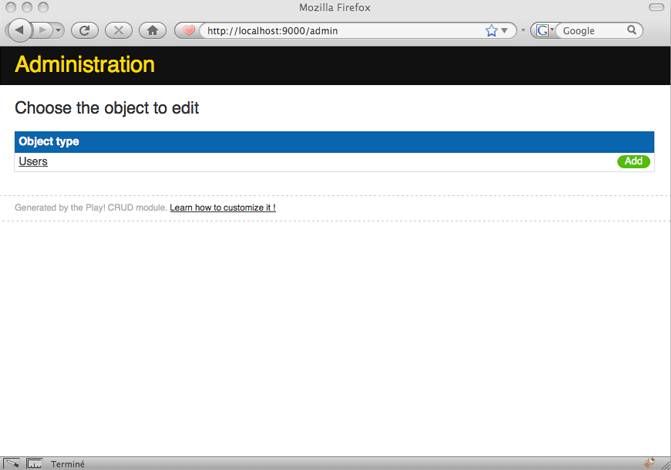
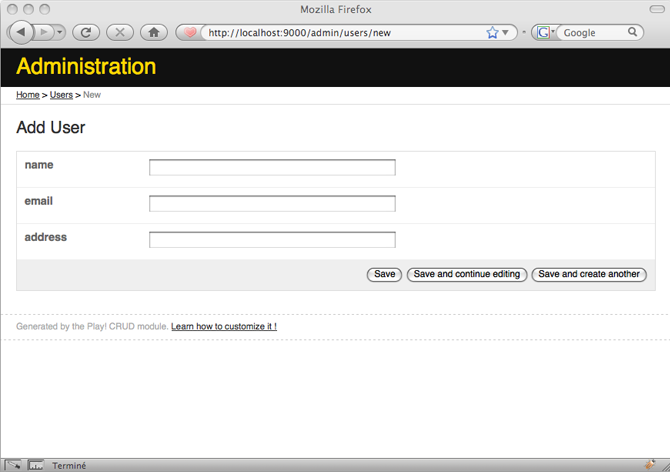
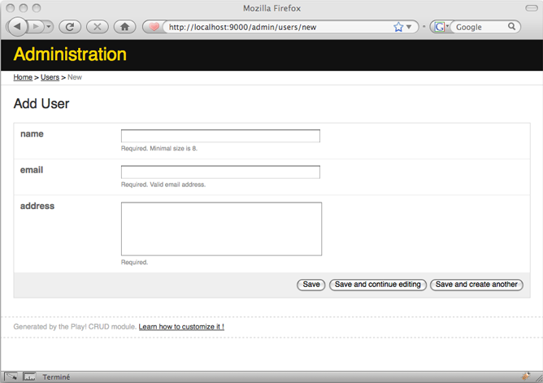
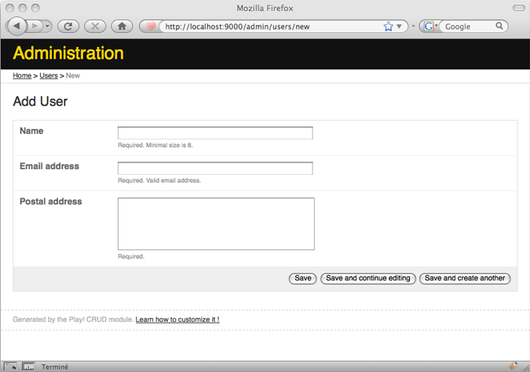
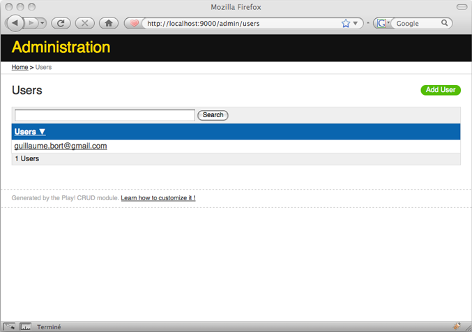
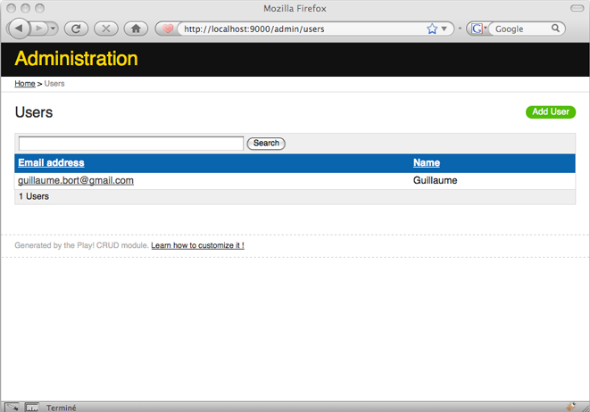

CRUD: Administration generator
The CRUD (Create, Read, Update, Delete) module generates a fully usable web interface for your JPA Model objects.
Using the CRUD module
Let’s see a simple example of using the CRUD module to manage user data.
Enable the CRUD module for the application
In the /conf/dependencies.yml file, enable the CRUD module by adding a line after require:
require:
- play -> crud
Now run the play dependencies command to resolve the new module dependency.
Import default CRUD routes
In the conf/routes file, import the default module routes by adding this line:
# Import CRUD routes
* /admin module:crud
This adds several routes for each of your CRUD controllers, which you will add below.
Note that using the default routes file is not required. You can also define your own routes, or mix the two.
Create a User class
The CRUD module provides a user-interface for your application’s model classes. We will start by creating a User model class, which is a JPA entity:
package models;
import play.*;
import play.db.jpa.*;
import javax.persistence.*;
import java.util.*;
@Entity
public class User extends Model {
public String name;
public String email;
public String address;
}
Create the Users controller
Next, we create a simple controller that just inherits the CRUD controller. This is a kind of ‘marker’ that the CRUD module uses for generating routes.
package controllers;
public class Users extends CRUD {
}
Now open http://localhost:9000/admin and you should see the User admin area.

The controller’s class name has to be the model class name with a final ‘s’. If you want to name it differently, you can do it using an annotation.
package controllers;
import models.User;
@CRUD.For(User.class)
public class AdminUsers extends CRUD {
}
The User form
Click the Add button, and you should see the User form.

Now we can add some validation rules to the User class:
package models;
import play.*;
import play.db.jpa.*;
import javax.persistence.*;
import java.util.*;
import play.data.validation.*;
@Entity
public class User extends Model {
@Required
@MinSize(8)
public String name;
@Required
@Email
public String email;
@Required
@MaxSize(1000)
public String address;
public String toString() {
return email;
}
}
Refresh the User form and you will see that the validation is automatically applied.

Change the form label
Add these lines to the conf/messages file in your application:
name=Name
email=Email address
address=Postal address
and refresh the User form:

Create a User and customize the list view
The default list view uses only one column containing the result of the object’s toString() method.

To customize this view, we need to create the /app/views/Users/list.html template in the application.
Open a shell, go the application directory and type:
play crud:ov --template Users/list
This will copy the default CRUD list.html template to the Users/list.html template in your application, overwriting it if present.
Edit the template like this:
#{extends 'CRUD/layout.html' /}
<div id="crudList" class="${type.name}">
<h2 id="crudListTitle">&{'crud.list.title', type.name}</h2>
<div id="crudListSearch">
#{crud.search /}
</div>
<div id="crudListTable">
#{crud.table fields:['email', 'name'] /}
</div>
<div id="crudListPagination">
#{crud.pagination /}
</div>
<p id="crudListAdd">
<a href="@{blank()}">&{'crud.add', type.modelName}</a>
</p>
</div>
and refresh the list.

Custom field rendering: the crud.custom tag
You can go a bit further by customizing the way each field of your User entity is displayed in the list and form views.
To customize a field, use the #{crud.custom} tag:
#{crud.table fields:['name', 'company']}
#{crud.custom 'company'}
<a href="@{Companies.show(object.company.id)}">
${object.company.name}
</a>
#{/crud.custom}
#{/crud.table}
You can also display additional columns or form inputs by defining custom handlers:
#{crud.table fields:['name', 'company', 'edit']}
#{crud.custom 'company'}
<a href="@{Companies.show(object.company.id)}">${object.company.name}</a>
#{/crud.custom}
#{crud.custom 'edit'}
<a href="@{Users.edit(object.id)}">Edit</a>
#{/crud.custom}
#{/crud.table}
List of String and List of enumeration
The CRUD module is showing them as a text field. In this text field, the list is represented by a comma separated list of String. For example:
@Entity
public class Account extends Model {
@CollectionOfElements
public Set<ContentType> contentTypes;
@CollectionOfElements
public Set<String> usernames;
public Account(Set<String> usernames) {
super();
this.usernames = usernames;
}
}
This is shown as: “myEnumId1”,“myEnumId2” for the contentTypes and “string1”,“string2” for the user names. By definition, this is what you should first customize in your CRUD module.
Customize the show and blank views in a generic way
A central influence on the behavior of CRUD views is the ObjectType for each field. So if you want to
change the CRUD module’s behaviour in a generic way, for example to hide fields with the @Version annotation, you can create you own ObjectType class. You must also declare a static method in your controller or a superclass of your controller.
protected static ObjectType createObjectType(Class<? extends Model> type) {
return new VersionObjectType(type);
}
Here is a complete example:
public class CustomAdminCompany extends CRUD {
protected static ObjectType createObjectType(Class<? extends Model> type) {
return new VersionObjectType(type);
}
public static class VersionObjectType extends ObjectType {
private final String versionColumn;
public VersionObjectType(Class<? extends Model> modelClass) {
super(modelClass);
versionColumn = getVersionColumnName(modelClass);
}
private String getVersionColumnName(Class modelClass) {
Class c = modelClass;
try {
while (!c.equals(Object.class)) {
for (Field field : c.getDeclaredFields()) {
if (field.isAnnotationPresent(Version.class)) {
return field.getName();
}
}
c = c.getSuperclass();
}
} catch (Exception e) {
throw new UnexpectedException("Error while determining the "
+ "object @Version for an object of type " + modelClass);
}
return null;
}
@Override
public List<ObjectField> getFields() {
List<ObjectField> result = super.getFields();
for (ObjectField objectField : result) {
if (objectField.name.equals(versionColumn)) {
objectField.type = "hidden";
}
}
return result;
}
}
}
This is not the end; you can also customize findPage and other methods. Have a look at the source code.
Localisation
You can localise the user-interface text by overriding the CRUD module’s messages in your application’s conf/messages file.
crud.add=Create new &{%s}
To see which message keys are used, look in the CRUD module’s own message file: $PLAY_HOME/modules/crud/conf/messages.
Commands
The CRUD module provides a crud:override command that you use on the command line to override the default templates. This works because the CRUD module loads templates from your application if they are present, instead of its own. You can also use crud:ov instead of crud:override.
play crud:override --template [path]
Copies the template specified by the path, e.g. Users/list, to your application’s app/views/CRUD/ directory. You can also use -t instead of --template.
play crud:override --layout
Overrides the main page layout template, layout.html.
play crud:override --css
Overrides the style sheet, crud.css, copying it to your the public/stylesheets/ directory.
Limitation
Limitation The CRUD module only shows bi-directional relationships in one of the two entities: the one that does not have the mappedBy attribute.